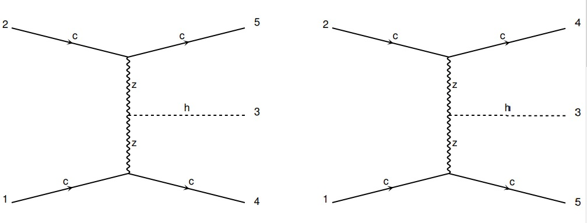

Simulador de colisionadores en Madgraph
Uno de los mejores mecanismos que tenemos actualmente para estudiar la estructura fundamental de las partículas son los colisionadores de partículas como lo es el Large Hadron Collider en el CERN (Suiza). En estos se colisionan partículas a muy altas energías con el fin de 'romperlas' y así ver su estructura interna, junto con otros procesos fundamentales que nos pueden dar pistas de nueva física.
De por sí, utilizar los aceleradores de partículas suele ser costoso y lento, por ejemplo, el LHC se pone a funcionar solo cada pocos años. Esto debido a que el aparato requiere mantenimiento, mejoras, etc. y los físicos requieren tiempo para estudiar los resultados que este haya arrojado. Así, una de las alternativas es la simulación de estos procesos mediante software's como MadGraph, donde además podemos observar cómo nuevos modelos (posible nueva física) afecta las señales resultantes en los colisionadores.
Por lo cual, para la segunda mitad del año 2023, el semillero se dispuso a aprender a utilizar estas herramientas de simulación, así como estudiar la teoría detras de estos procesos de colisión. Se plantea simular y diferenciar diferentes procesos de producción del bosón de Higgs (descubierto en el 2012 por el LHC) como ejercicio pedagógico.
